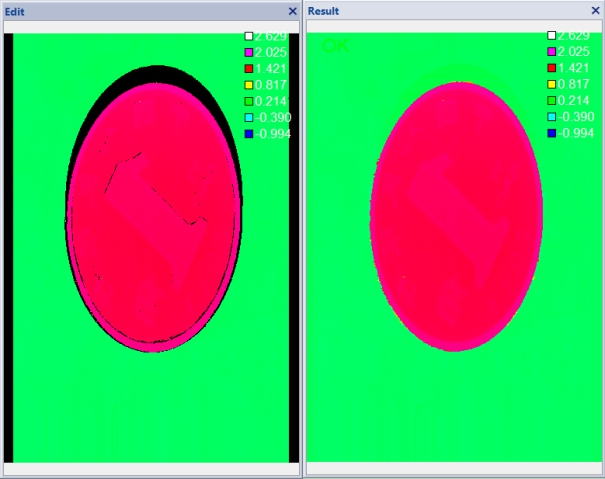
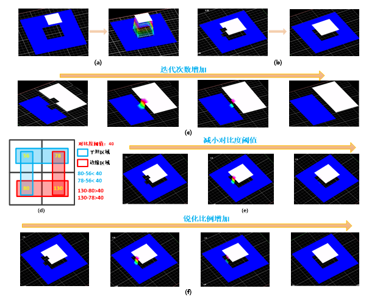

缺失像素填充工具
功能
由于3D相机成像的原理，深度图像的每一个像素并不总是拥有一个有效深度值，即图像中可能存在缺失像素。缺失像素填充工具对缺失像素的邻域或全图进行分析，计算出一个新的深度值填充无效像素，提高整幅图像的完整性和有效性。该工具的处理前后效果对比如图1所示。

图1 缺失像素填充工具示意图
参数
| 分类 |
参数名称 |
参数描述 |
| 属性窗口 |
填充方法 |
去除干扰点后，会对去除后的空洞位置进行填充，该参数用于指定填充方法，分为三种：无、线性填充、非线性填充。 |
|
ROI类型 |
待检测区域，其中缺失像素填充方式中的无、线性对应的ROI分为6种：整幅图像、矩形、仿射矩形、圆形、椭圆、多边形。非线性对应的ROI分为5种：整幅图像、矩形、仿射矩形、圆形、椭圆。 |
|
深度值计算方法 |
分为4种，邻域最大、邻域最小、邻域插值、全局模式。缺失像素填充参数选择线性填充时有效。 |
|
邻域像素搜索方向 |
分为3种，水平、垂直、双向，即在邻域模式下，对目标像素点水平方向两侧或垂直方向两侧或水平垂直方向两侧的有效像素进行分析。该参数仅在邻域模式下有效。 |
|
全局模式计算方式 |
分为4种，全局最大，全局最小、全局平均、固定值。缺失像素填充参数选择线性填充时有效。 |
|
全局模式固定值 |
该参数仅在全局模式计算方式选择固定值时有效，真实Z值，图像Z轴方向分辨率及偏移不同真值范围不同，单位： mm |
|
裁剪图像 |
选择“是”，则按照ROI区域对结果图像进行裁剪。 |
|
非线性填充方法 |
分为2种，平滑和边缘保持。 |
|
计算次数 |
对缺失像素进行填充时，算法需要对待填充像素的深度值计算的次数。取值范围为：[1,10000]。 |
|
填充模式 |
分为4种，parabolic、perona-malik、weickert、shock。该参数仅在保持边缘填充下有效。 |
|
更新步长 |
每一次迭代计算新填充值时，更新的步长大小。取值范围为：（0,10000]。 |
|
边缘高度阈值 |
领域像素高度差大于阈值的区域被认为边缘，真实Z值，图像Z轴方向分辨率不同真值范围不同，单位： mm |
|
shock滤波比重 |
Shock比例为：在计算填充结果时，Shock滤波所占的比重大小，其取值范围为[0,1]。 |
|
平滑强度 |
深度图像填充过程中，对图像进行平滑滤波的强度，图像中噪声干扰越大，对应的平滑强度需增大。取值范围为（0,20）。 |
| 图像窗口 |
深度图像 |
显示待检测的深度图像，显示为伪彩色图像。 |
|
检测区域 |
在图像上显示待检测区域。 |
| 数据链 |
输入深度图像 |
输入待检测的深度图像。 |
|
二维线性变换 |
目标相对于模板的平移、旋转、缩放变换。 |
| 高级界面 |
无 |
无 |
输出
| 分类 |
参数说明 |
| 输出深度图像 |
输出填充后的深度图像 |
| 执行结果 |
工具执行结果 |
| 执行时间 |
工具执行时间 |
详细说明
1. 线性填充参数说明
线性填充的本质是对缺失像素的邻域有效像素或全图像素进行分析，为缺失像素计算深度值。因此，深度值计算方式可分为邻域模式和全局模式。
邻域模式：通过分析缺失像素的邻域像素来计算缺失像素的深度值。具体来说，邻域模式包括邻域最大、邻域最小、邻域插值三种模式。其中，邻域最大/邻域最小以缺失像素邻域范围内最大/最小的深度值作为处理结果。邻域插值基于邻域像素的位置和深度进行线性插值。
全局模式：通过分析全图中所有有效像素来计算缺失像素的深度值，包括全局最大、全局最小、全局平局和固定值四种方法。全局最大/全局最小/全局平均以全图的最大/最小/平均有效像素值来填充所有无效像素。固定值方法以用户输入的数值填充缺失像素。
2. 非线性填充参数说明

图4 非线性填充参数示意图
填充方法：缺失像素非线性填充工具使用的填充方法，目前包括：平滑填充和边缘保持填充两种方式。顾名思义，平滑填充，在缺失像素的填充过程中，像素的深度值是平滑过渡的，适用于平坦区域的缺失像素填充；边缘保持填充，则在填充过程中，可以对物体的边缘信息有较好的保留。具体示意图如图4(a)和4(b)所示。
填充模式：边缘保持填充方法下的几种填充模式，主要包括：Parabolic，Parabolic Mailk，Weickert，Shock等几种填充模式。
计算次数：对缺失像素进行填充时，需要对待填充像素的深度值计算的次数。如图4©所示，随着计算次数的增加，缺失像素的填充效果不断改善。
更新步长：每一次迭代计算新填充值时，更新的步长大小。
边缘高度阈值（原名：对比度阈值）邻域像素高度差大于阈值的区域被认为边缘。图4(d)所示为，边缘高度阈值设置为40时，平坦区域与边缘区域划分的一个结果。值得注意的是，一个像素既可以与其邻域像素构成平坦区域，也可以同时与其他邻域像素构成边缘区域。例如：图4(d)中56与78的梯度值为28，小于边缘高度阈值，此时56对应的像素与78对应的像素构成平坦区域；同时，78与130的梯度值为52，此时78对应的像素与130对应的像素构成边缘区域。
如图4(e)所示，为边缘高度阈值与填充区域内边缘保持效果的大致关系：一般而言，随着边缘高度阈值减小，边缘保持效果可以得到提高。
shock滤波比重（原名：锐化比例）：Shock填充模式下，缺失像素填充值由图像的平滑滤波值和Shock滤波值按比例相加计算得到。Shock比例为：填充结果中，Shock滤波所占的比重大小，其取值范围为[0, 1]。如果Shock比例为0，则代表填充结果由图像平滑滤波计算而成，如果Shock比例为1，则代表填充结果由Shock滤波计算而成。该参数仅在边缘保持填充方法下的Shock模式下设置。图4(f)所示，为Shock比例与填充区域内边缘保持效果的大致关系：一般而言，随着Shock比例的增加，边缘保持效果可以得到提高。
平滑强度：深度图像填充过程中，对图像进行平滑滤波的强度，图像中噪声干扰越大，对应的平滑强度需增大。
3. 使用向导
Step 1 填充参数的设置
填充方法分为3种，不填充、线性填充、非线性填充。
不填充：去除突起干扰点之后，不做任何填充，仅输出去除突起干扰点后的深度图像。
线性填充：去除突起干扰点之后，使用线性填充方法进行填充，并输出填充后的深度图像。
- 需要设置的参数主要是深度值计算方法参数（以领域最大为例，以缺失像素两端的较大值填充）、领域像素搜索方法 （以水平为例：按图像的X方向水平进行填充）、全局模式计算方法（全局最大：图像的最大值进行填充；固定值：按设定的固定值进行填充）。
非线性填充：去除突起干扰点之后，使用非线性填充方法进行填充，并输出填充后的深度图像。
需要设置的参数：
若填充方法设置为平滑填充时，此时仅需要对计算次数参数进行设置；
若填充方法为边缘保持填充时，需要对计算次数、更新步长、平滑强度、边缘高度阈值、锐化比例等参数进行设置：
第一步：选择填充模式：边缘保持填充方法下的几种填充模式，主要包括：Parabolic，PeronaMailk，Weickert，Shock等几种填充模式。几种模式的特点以及适用场景可参考下方表格。
第二步：更新步长：每一次迭代计算新填充值时，更新的步长大小。更新步长默认为1，更新步长一般增大到10即可；
第三步：计算次数：先把计算次数设一个较大值，如5000，10000，确保后续调参时，效果不会受到计算次数不够而达不到填充效果。
第四步：平滑强度：深度图像填充过程中，对图像进行平滑滤波的强度，图像中噪声干扰越大，对应的平滑强度需增大。Shock模式下平滑强度一般设置为3，根据实际的填充效果，如果待填充区域的填充结果有较大的块状区域，需增大平滑强度；Parabolic, Parabolic Mailk和Weickert模式下的平滑强度一般设置小于1，根据采集的深度图像的质量，以及实际的填充结果（待填充区域的填充结果有较大的块状区域），此时可适当增大平滑强度。
第五步：边缘高度阈值（原名：对比度阈值）邻域像素高度差大于阈值的区域被认为边缘。上图(d)所示为，边缘高度阈值设置为40时，平坦区域与边缘区域划分的一个结果。值得注意的是，一个像素既可以与其邻域像素构成平坦区域，也可以同时与其他邻域像素构成边缘区域。例如：上图(d)中56与78的梯度值为28，小于边缘高度阈值，此时56对应的像素与78对应的像素构成平坦区域；同时，78与130的梯度值为52，此时78对应的像素与130对应的像素构成边缘区域。
实际项目中边缘高度阈值需要多次调试，才能得到需要的值。可以通过效果了解到参数过大还是过小，阈值过大会出现如左图的效果，边缘部分过于塌陷或粘连；阈值过小会出现右图现象，出现好几层边缘。


边缘高度阈值的设置需根据边缘梯度差来确定，具体可参照边缘高度阈值的定义；一般而言，随着边缘高度阈值减小，边缘保持效果可以得到提高，如上图(e)所示。
第五步：shock滤波比重（原名：锐化比例）：Shock填充模式下，缺失像素填充值由图像的平滑滤波值和Shock滤波值按比例相加计算得到。Shock滤波比重为：填充结果中，Shock滤波所占的比重大小，其取值范围为[0, 1]。如果Shock滤波比重为0，则代表填充结果由图像平滑滤波计算而成，如果Shock滤波比重为1，则代表填充结果由Shock滤波计算而成。该参数仅在边缘保持填充方法下的Shock模式下设置。如上图(f)所示，为Shock比例与填充区域内边缘保持效果的大致关系：一般而言，随着Shock滤波比重的增加，边缘保持效果可以得到提高。
第六步：计算次数：慢慢把计算次数降下来，在不影响处理效果的前提下减少工具耗时。
下表为边缘保持填充下的几种方法特点以及适用场景，用户可根据最终需要达到的填充效果对方法进行选用。
| 填充方法 |
填充模式 |
方法特点 |
适用场景 |
| 平滑填充 |
平滑填充 |
填充结果与周围像素之间平滑过渡 |
适用于平坦区域内的缺失像素填充，包括水平区域和倾斜区域等。需对迭代次数进行设置，根据区域大小一般设置为200-1000左右。 |
| 边缘保持填充 |
Parabolic |
填充结果可以减缓缺失像素在边缘处的平滑过渡，但不能完全消除平滑效应 |
建议优先使用Shock模式和Parabolic Mailk模式对深度图像进行填充 |
|
Parabolic Mailk |
填充结果可以基本消除缺失像素在图像边缘处的平滑效应。耗时相对Weickert较短 |
适用边缘区域内的缺失像素填充，其中边缘区域可处于水平区域内部或倾斜区域内部。该模式需要对迭代次数，迭代步长，边缘高度阈值，平滑强度等参数进行设置 |
|
Weickert |
填充结果可以基本消除缺失像素在图像边缘处的平滑效应。耗时相对PM较长 |
适用边缘区域内的缺失像素填充，其中边缘区域可处于水平区域内部或倾斜区域内部。该模式需要对迭代次数，迭代步长，边缘高度阈值，平滑强度等参数进行设置 |
|
Shock |
填充结果可以较好地消除缺失像素在图像边缘处的平滑效应 |
适用于水平区域内的缺失像素填充（包括平坦区域和边缘区域）。但是不适用于倾斜区域内存在缺失像素的填充。该模式需要对迭代次数，迭代步长，边缘高度阈值，平滑强度等参数进行设置 |
Step 2 ROI设置
在感兴趣区域内进行缺失像素的填充。
Step 3 执行工具和输出结果
在上述步骤之后，就可以执行工具，并得到处理后的深度图像。
注意
无
示例工程
参见“\Samples\3D\深度图\3D测量工具.gvp”。